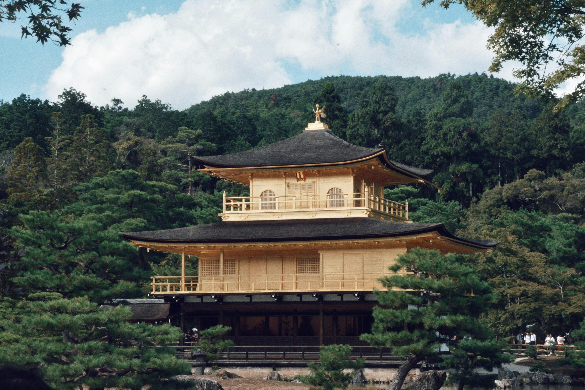

Paris, France

Known as the City of Lights, Paris is famous for its romantic atmosphere, iconic landmarks, and world-class cuisine.
Weather:
Mild and pleasant. Summers (June–August) are warm, while winters are cool with occasional rain. Best time to visit: spring and early fall.
Top Places to Visit:
- The Eiffel Tower – especially beautiful at night
- Louvre Museum – home of the Mona Lisa
- Sacré-Cœur Basilica and Montmartre art district
- Luxembourg Gardens and the Seine River banks
Local Foods to Try:
- Croissants and pain au chocolat
- Crêpes (savory and sweet)
- Escargots (snails) and French onion soup
- Macarons and artisanal cheeses
Kyoto, Japan
Kyoto offers a peaceful escape into Japan’s traditional culture, full of ancient temples, serene gardens, and tea houses.
Weather:
Four distinct seasons. Spring (cherry blossoms in March–April) and fall (colorful leaves in October–November) are most popular. Summers are hot and humid, winters are cold but not harsh.
Top Places to Visit:
- Fushimi Inari Shrine with its iconic red torii gates
- Kinkaku-ji (Golden Pavilion)
- Arashiyama Bamboo Grove
- Gion District – see geisha and traditional tea houses
Local Foods to Try:
- Kaiseki (multi-course traditional meal)
- Yudofu (tofu hot pot)
- Matcha (green tea) sweets and drinks
- Soba and udon noodles
New York City, USA

New York is a fast-paced, multicultural hub packed with entertainment, food, history, and architecture.
Weather:
Cold winters with possible snow; hot and humid summers. Spring and fall are ideal for visiting with comfortable weather and vibrant city life.
Top Places to Visit:
- Times Square and Broadway shows
- Central Park and the Museum of Natural History
- Statue of Liberty and Ellis Island
- Brooklyn Bridge and High Line Park
Local Foods to Try:
- New York-style pizza and bagels
- Cheesecake (Junior’s is famous!)
- Street food: hot dogs, pretzels, halal carts
- Diverse cuisines from Chinatown, Little Italy, and Queens